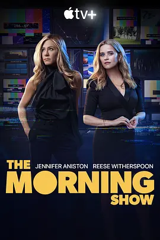

7.3
早间新闻 第二季
The Morning Show Season 2
2021
美国
评分 7.3
导演:
米密·莱德 / 莱丝莉·琳卡·格拉特 / 虞琳敏 / 塔克·盖茨 / 瑞秋·莫里森
演员:
詹妮弗·安妮斯顿 / 瑞茜·威瑟斯彭 / 比利·克鲁德普 / 马克·杜普拉斯 / 朱丽安娜·玛格丽丝
类型:
剧情,都市
剧情简介
新一季的晨光洒进演播室时，UBA 的气氛却比往日更加紧绷。上一季风暴余波仍在回荡，团队尚未从震荡中完全站稳，就又面临新的舆论与内部重组压力。亚历克斯在重新回归的问题上犹豫不决，她在公众形象、自我认同与职业责任之间不断拉扯，而布拉德利则试图在台前幕后维持一种微妙的平衡，却发现自己越陷越深。随着劳拉·彼得森加入节目，一种更锋利的专业气场随之而来，也让团队内部的关系产生新的层次。各地突发新闻不断升级，节目组必须在紧迫的资讯节奏中迅速应对，任何延误都可能造成连锁反应。面对外部的激烈竞争，每一次选题会议都像是一场无声战斗，编辑们在事实、观点与频道策略之间反复权衡。与此同时，演播室走廊里流动的目光和未说出口的暗潮，也在不知不觉中重塑着众人的位置。疫情阴影的逼近，使新闻行业的日常工作变得更加复杂。角色们在录制间隙频繁接听电话、互通消息，试图在混乱信息中辨清现实，而那种不确定感逐渐渗透到每个人的生活里。节目表面维持着专业镇定，但内部的裂缝随着压力持续扩大。第二季让观众更靠近这些主播与制片人，让他们在光鲜舞台上的坚硬外壳下显露更多未被看见的脆弱与勇气。